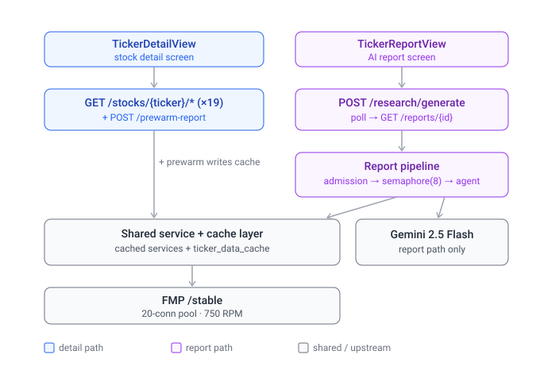
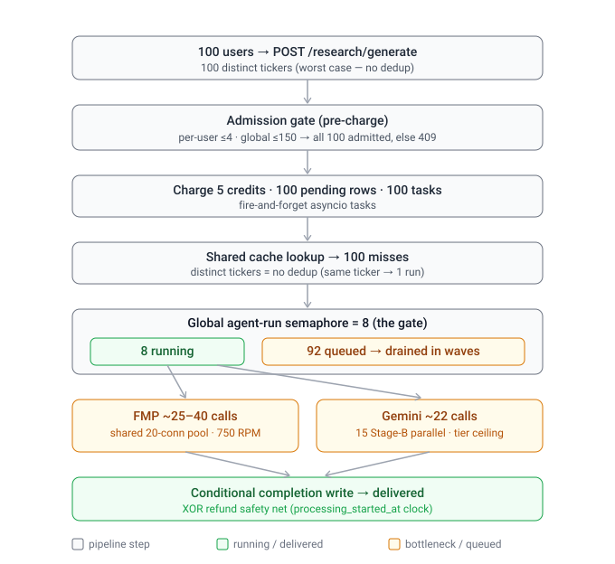

Report generation — system design
How TickerDetailView and TickerReportView share the backend, and the data flow for 100 users generating 100 different reports.
1 · How the two screens share the backend

- TickerDetailView →
GET /stocks/{ticker}/*(≈19 endpoints) → cached services → FMP. No Gemini, no semaphore — it is FMP-bound. On open it also firesPOST /prewarm-report, which writesticker_data_cache(the report's bundled collection). - TickerReportView →
POST /research/generate→ the report pipeline (admission → semaphore → agent) → the agent's collector reuses the same cached services +ticker_data_cache, and additionally calls Gemini. - The overlap is the gray layer: the report collector pulls from the same
analyst / holders / snapshots / revenue / earningscaches the detail view populates (~8–9 of its ~20 sub-fetches), and both read/writeticker_data_cache. Opening the detail view is a partial warm of a future report — FMP side only; the Gemini half is report-exclusive.
2 · Data flow — 100 users, 100 different reports

- Admit — the per-user cap (≤4) is irrelevant (100 different users, 1 each); the global cap (≤150) admits all 100. If it were 200, ~50 would fast-fail with
409 SYSTEM_BUSY. - Charge + enqueue — 5 credits ×100, 100
pendingrows, 100 fire-and-forget tasks. - Cache — 100 distinct tickers → 100 misses (no dedup). Same ticker instead → collapses to 1 run via
_INFLIGHT. - The gate — the global semaphore = 8. Only 8 compute at once; the other 92 park cheaply and drain as slots free.
- Per running report — ~25–40 FMP calls through the shared 20-connection pool / 750 RPM, and ~22 Gemini calls (15 Stage-B narratives in parallel, context-cached). This is the bottleneck pair.
- Finish — a conditional completion write delivers the report, XOR the reconciliation safety net refunds it (never both) — the credit invariant, kept honest by the
processing_started_atclock.
Takeaway. Reports are Gemini-bound (8-slot semaphore + tier TPM); the detail view is FMP-bound (20-conn pool + 750 RPM) — different ceilings. 100 distinct reports drain in ~13 waves of 8 (≈10–15 min; first users ~1 min); 100 distinct detail views are far cheaper (no Gemini, no semaphore). Under overload nothing crashes — it sheds load (409), paces Gemini (429 backoff + circuit breaker), and refunds anything it can't deliver.